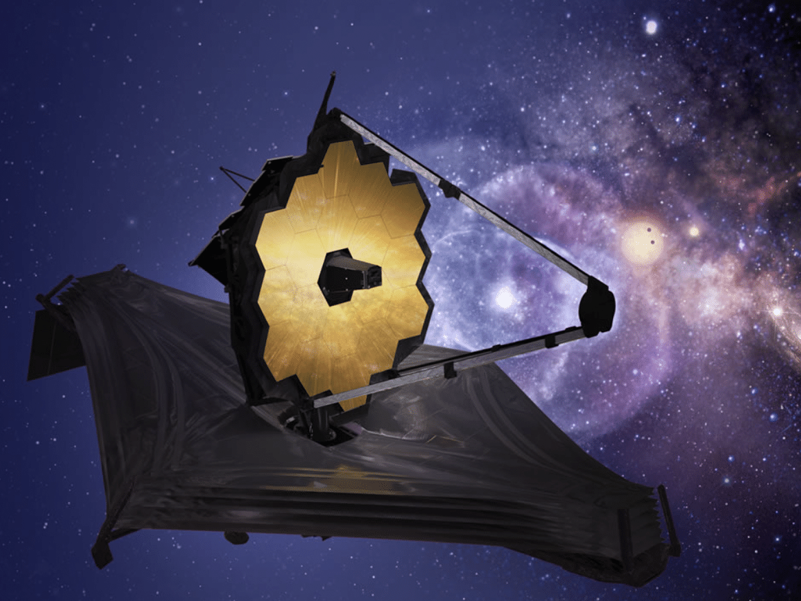
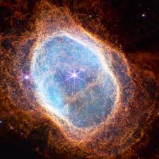

Veja a seguir alguns dos fantásticos registros obtidos por este telescópio espacial.
Uma nova visão dos pilares da criação, onde temos uma nova imagem com maiores detalhes

A magnifica nebulosa Carina